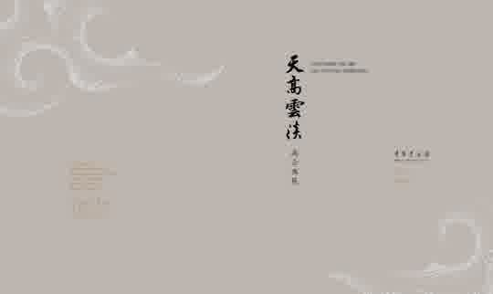

伊菲尼特
INFINITE
服务
全部作品
联系
首页
/
项目案例
/
中国美术馆
广告制作 / PROJECT
中国美术馆
海报 KV 设计
海报与 KV 视觉设计项目。
服务类别
广告制作
项目内容
海报 KV 设计
项目图片
4 张
项目条目与图片依据公司企业版简介整理。页面不推定未在资料中记载的项目成效。
项目图片
中国美术馆 · 海报 KV 设计 · 图片 1
中国美术馆 · 海报 KV 设计 · 图片 2

中国美术馆 · 海报 KV 设计 · 图片 3
中国美术馆 · 海报 KV 设计 · 图片 4
咨询类似项目